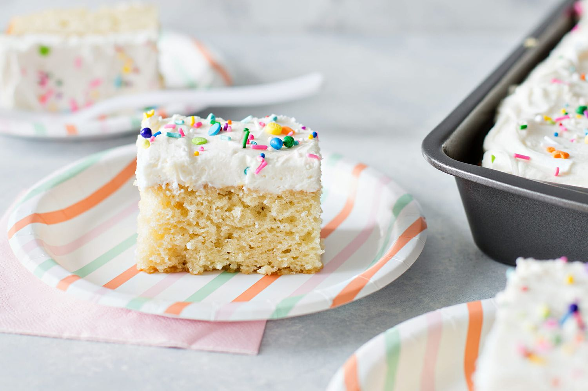

Birthday Cake Recipe
Home

Description
This is a rather straight-forward ‘birthday cake’ that we usually bake for birthday celebrations. We usually don't decorate it, but when we do we usually make buttercream icing.
Ingredients
- Melted butter for greasing
- 200g Butter
- 330g Caster sugar
- 1tsp Vanilla essence
- 4 Eggs
- 450g Self-raising flour
- Pinch of salt
- 175mls Milk
- Preheat oven to 160°C, grease pan with butter and line the base with non-stick baking paper.
- Beat the butter, sugar and vanilla essence in a large mixing bowl until pale and creamy. Add the eggs one at a time, and beat well after each addition.
- Sift togther the self-raising flour and salt. Mix the sifted flour into the butter mixture alternately with the milk in three separate batches of each. Careful not to overmix.
- Spoon the cake mixture into the prepared cake pan and bake in preheated oven for 1 hour and 25 minuted or until cooked through.
- Decorate with your own choice of icing and enjoy!